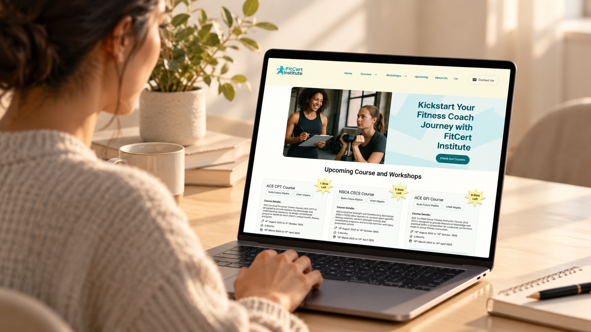
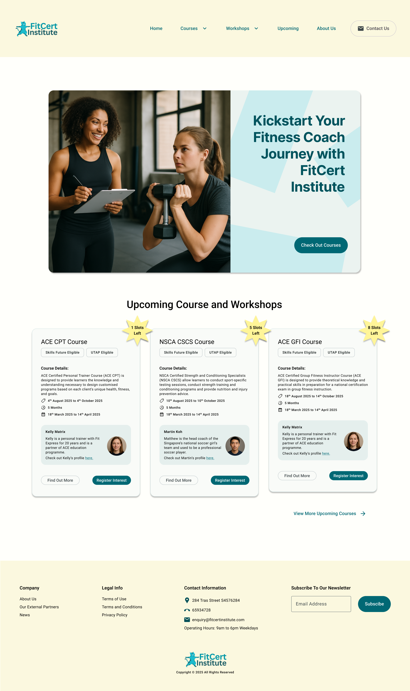
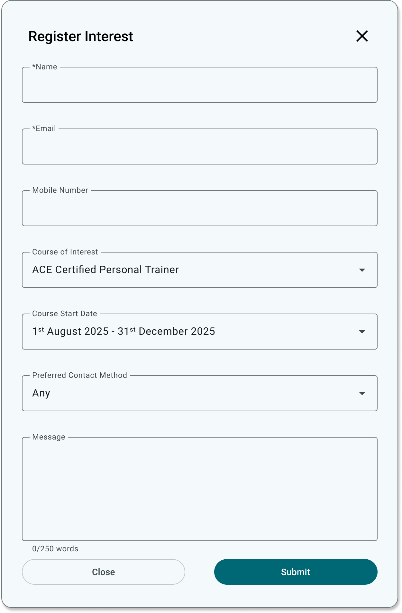
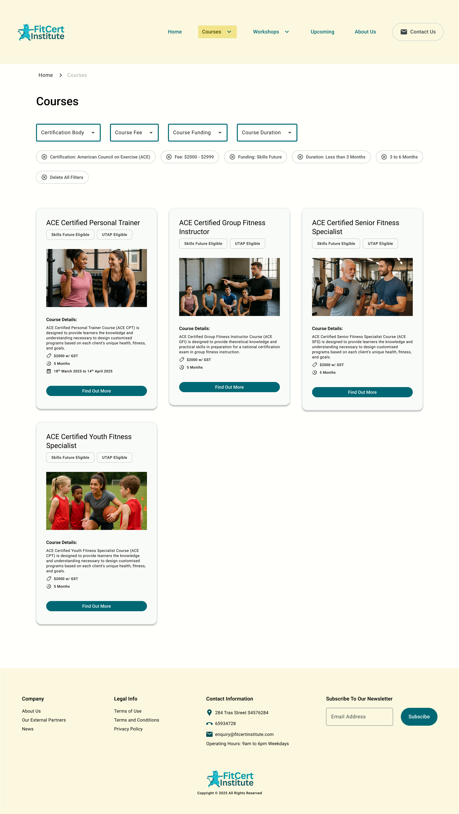
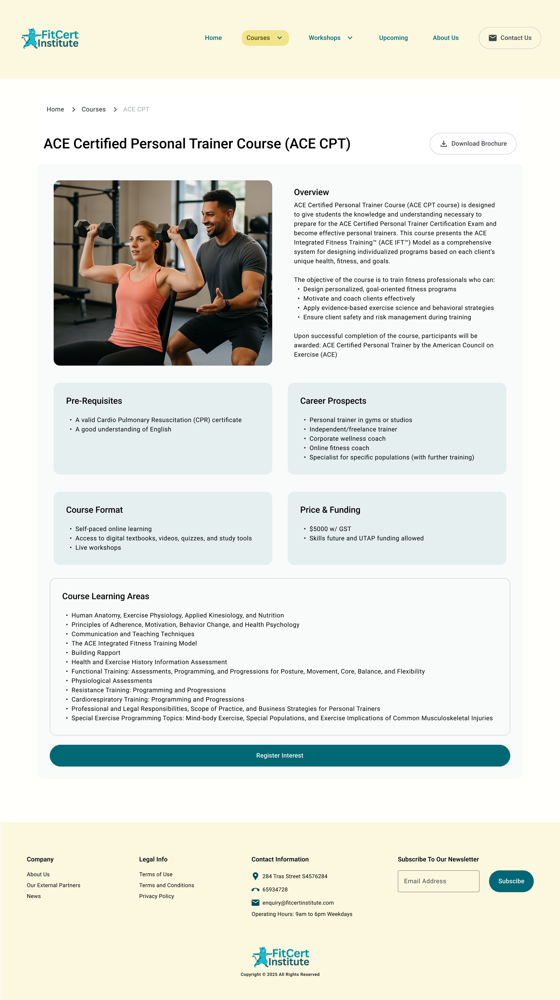
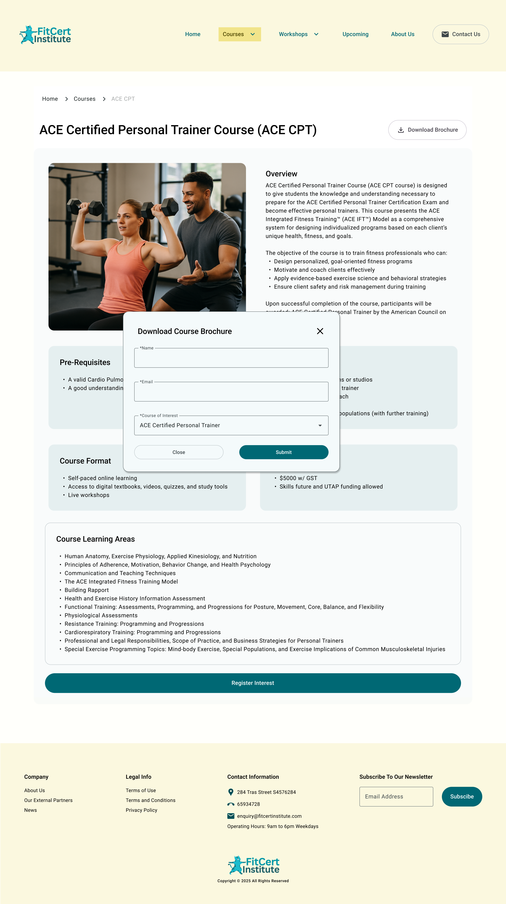
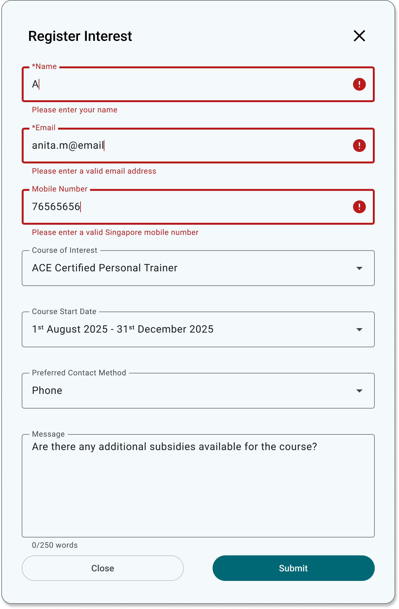
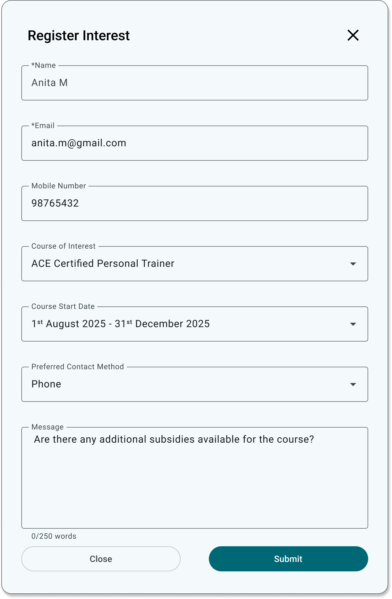
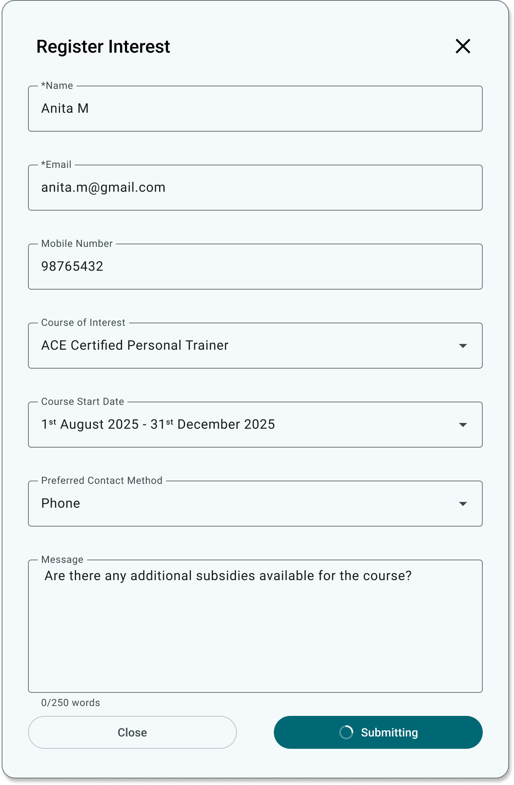
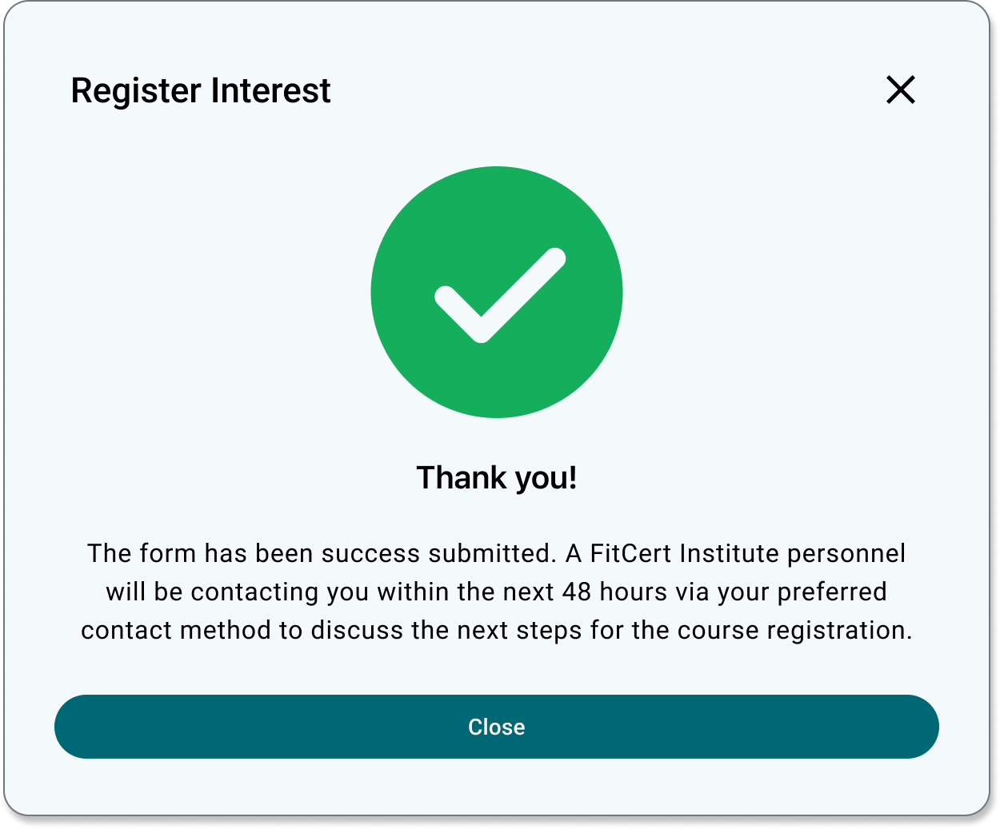

Finding relevant courses
Course schedules and useful entry points were not always easy to locate from the main course experience.
REDESIGNING COURSE DISCOVERY
A self-initiated redesign exploring how clearer discovery, comparison and feedback could help people progress from browsing personal-training courses to registering their interest.

This is an independent concept project and was not affiliated with or commissioned by the organisation whose former website informed the audit. FitCert is a fictional brand created for the redesign.
OVERVIEW
The former website of a fitness education provider listed personal-training programmes from different training institutions. Prospective learners needed to understand which course suited them, compare practical information and decide how to take the next step.
I treated conversion as the product problem: not simply encouraging more clicks, but helping visitors move confidently from discovering a course to expressing genuine interest. Because this was a self-initiated project without access to business analytics, the redesign represents a design hypothesis rather than a measured conversion improvement.
THE CHALLENGE
The audit suggested that important decision-making information was fragmented or difficult to interpret, while unclear actions and limited feedback made it harder to progress through the journey.
Course schedules and useful entry points were not always easy to locate from the main course experience.
Jargon, duplicated content and unclear labels increased the effort needed to understand the offering.
Price, funding eligibility, upcoming intakes and provider information needed to be easier to scan and compare.
Calls to action, form validation and confirmation needed to provide clearer direction and feedback.
DISCOVERY
I reviewed the existing website against established usability heuristics, including visibility of system status, consistency, match with real-world language, error prevention and recovery. I also walked through a representative task: finding a personal-training course that could be funded using SkillsFuture Credit.
The audit recorded where information or feedback could create uncertainty. These observations became design hypotheses to address in the redesign; they were not presented as findings from user interviews or usability tests.
HEURISTIC AUDIT SUMMARY
Each observation is mapped to the usability principle it most directly violated. These are findings from my heuristic walkthrough, not from user interviews or usability testing.
Recognition rather than recall
Useful entry points were not consistently visible, requiring visitors to search through the navigation or remember where information might be located.
Example Finding a personal-training course that accepted SkillsFuture Credit required searching across course and intake-related content rather than following one clear path.
Match between the system and the real world
Technical terms described what happened within the system instead of explaining the outcome in language prospective learners could understand.
Example After the Register Interest form was submitted, the website said that a “record” had been “added” or “updated”. Although this indicated that something had happened, the database-oriented wording did not clearly confirm whether the visitor’s interest had been registered successfully or explain what would happen next.
Consistency and standards
Details such as price, funding eligibility, intake dates and providers were fragmented, duplicated or presented inconsistently across the experience.
Example A learner could not scan one consistent course summary to compare fees, available funding, the next intake and the training provider.
Match between the system and the real world
Some labels did not clearly communicate what would happen after they were selected, making it harder for visitors to move forward with confidence.
Example The course button said “Read more”, but selecting it led visitors towards registering their interest in the course. A clearer label, such as “Register interest”, would set the right expectation before they act.
Error prevention · Visibility of system status
Invalid details did not receive immediate inline validation, error messages did not identify the affected fields, and submission feedback could easily be missed after the page refreshed.
Example An invalid email address and Singapore phone number received no immediate feedback. When submission failed, the general error did not identify the incorrect fields. The website then returned the visitor to a content-rich page and placed the message at the bottom, requiring them to scroll down after submitting the form to discover what had happened.
INTENDED JOURNEY
I mapped the journey around the questions a prospective learner would need to answer before feeling ready to proceed.
Find an appropriate personal-training course.
Understand the course content and entry requirements.
Review price and applicable funding support.
Check upcoming intakes and course duration.
Learn about the provider and trainer.
Share contact details and receive a clear confirmation.
DESIGN DIRECTION
Clear entry points from the homepage, upcoming programmes and navigation help learners reach the course catalogue without relying on search or deep links.
Representative filters for certification body, fees, funding and duration help learners focus on courses that match their practical constraints.
Course cards and detail pages prioritise price, funding, intake, duration, entry requirements and provider information.
Explicit labels, contextual validation, submitting feedback and a success state clarify what the system needs and what happens next.
THE REDESIGN
The redesign preserves the organisation’s course offering while restructuring the journey around clearer discovery, comparison and progression.
The homepage introduces the offering and presents current courses and workshops without requiring visitors to search through the wider website first. If something catches their interest, they can register their interest immediately without leaving the page.


Filters for certification body, fees, funding and duration reduce the catalogue, while removable tags keep the selected criteria visible.

The ACE CPT page groups the overview, prerequisites, format, career prospects, price, funding and learning areas. Actions such as “Download Brochure” let visitors find out more, while “Register Interest” provides a clear route forward when they are ready.


The sequence shows field-level validation, a completed form, progress during submission and a clear confirmation explaining what happens next.




PROPOSED MEASUREMENT
As the concept has not been released, these are proposed measures rather than results. The primary outcome would be completed course-interest registrations, supported by behavioural and usability signals across the journey. The four measures should be interpreted holistically: no single metric can explain whether the experience is effective, and changes in one should be considered alongside conversion, time, errors and abandonment.
The number of visitors who successfully register their interest shows whether the redesigned journey supports its intended outcome and generates meaningful course enquiries.
The time from entering the website to completing an interest registration helps indicate whether the path is direct and unobstructed. Longer journeys may suggest friction when considered alongside navigation paths, validation errors and abandonment.
The proportion of course-page visitors who complete an interest registration indicates whether the course information and calls to action give learners enough confidence to proceed.
Validation errors, repeated attempts and exits during the form reveal where visitors have difficulty providing information or understanding what the system requires.
LIMITATIONS & NEXT STEPS
Test whether learners can move from discovering and filtering courses to evaluating a suitable option and registering their interest. The research would also assess whether the information hierarchy and terminology support their decisions throughout the journey.
Use secondary research and comparable course-registration services to examine assumptions about lead quality, operational constraints and the hand-off after an interest form is submitted. Questions that require access to the provider would remain clearly identified as unresolved.
Map the next phase for self-funded and SkillsFuture Credit learners, including eligibility, documentation, payment and confirmation.
REFLECTION
This project helped me frame conversion as a sequence of user decisions rather than a single call to action. A learner must first find a relevant course, understand whether it suits their goals and constraints, trust the provider and know what will happen after expressing interest. The redesign brings those decisions into one connected journey, while the next step would be validating whether the proposed experience genuinely helps prospective learners progress.
NEXT PROJECT
Creating User Personas→